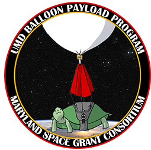
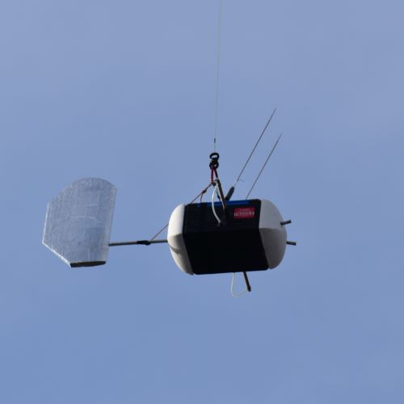

At any given time in the program, a number of payloads are in various stages of preparation for future flights. Listed below are some of the current and past projects we have worked on.
Payloads and Projects
-

Command
The primary flight tracking payload, contains a 4N redundant tracking system and redundant flight recording systems -

FISH (Freakin Incredible Stratospheric Hotwire?)
Payload assembled by HAPL for hypersonics research and flown by BPP -
LIVE (Live Internet Video Streaming)
A high data rate communications link for sending low latency telemetry and video down from the balloon -
SATRN (Suspended And Triggered Release Node)
Release mechanism for drop test payloads and occasionally flight termination -
TURBO (Turbine Using Rotation Blades Onboard)
Test of what happen if I write a real long sentence instead of doing something more reasonable in length even more words and more words